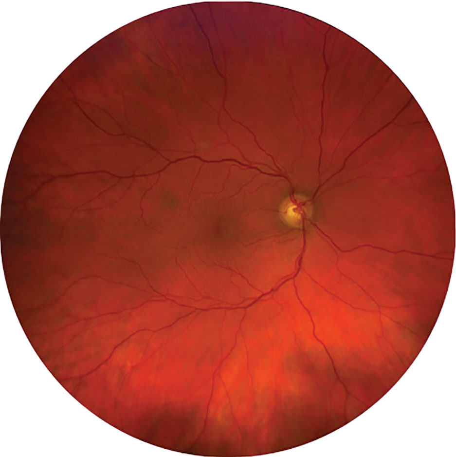
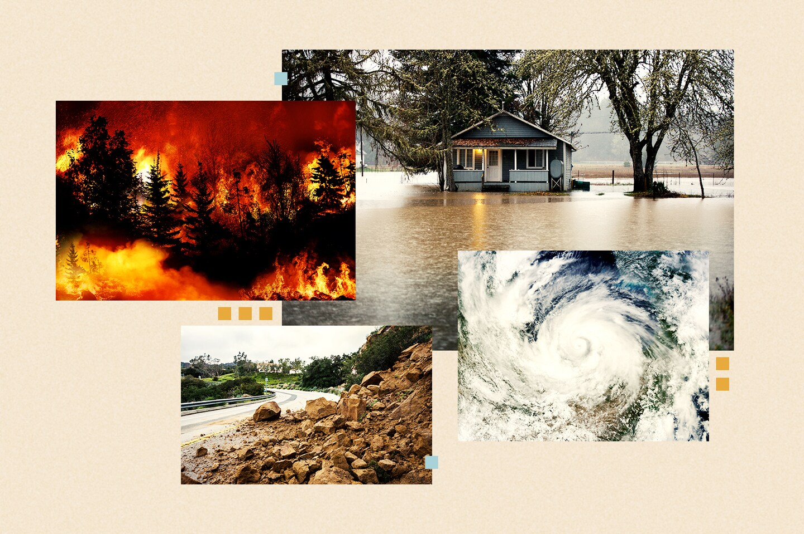

About Me
I'm Rostand Kom Tchuente, and I'm seeking my first role in ML/AI development or Data analytics/engineering. I got into data because how much of our world rests on it; whether it be Patient care, the technology we use, new medications, our understanding of society, meaningful change almost always starts with data, and I wanted to work at that foundation.
My strongest grounding is healthcare. As a clinic assistant at Fairview Health Services, I collect and verify patient information under HIPAA and use Epic reporting tools to identify patients overdue for screenings. The outreach that followed helped reduce that backlog by 30%. Earlier, as a quality control lab technician, I analyzed test data to track quality metrics and flag compliance gaps, and I helped launch a new SOP that increased production. As a U.S. Army combat medic, I managed health metrics and inventory for a 12-person squad and turned operational data into daily briefings for commanding officers.
I built on that experience with an MS in Data Science from Eastern University (December 2025) and a BS in Biochemistry and Molecular Biology. I work with Python, SQL and PostgreSQL, Airflow, FastAPI, Docker, and PyTorch, and my projects include an automated data pipeline feeding an interactive map and a machine learning app for retinal disease detection, which you can try below.
Featured Projects

AI Eye Disease Detection
End-to-end deep learning system for multi-class ocular disease diagnosis from retinal fundus images.
Tech: Python, PyTorch, CNNs, FastAPI, Docker, Render
Model: EfficientNet-B3
Performance: ROC-AUC 0.98

Natural Events Tracker
Live tracker for natural events occuring around the world.
Tech: Python, Docker, Render, FastAPI, Apache Airflow, leaflet.js
Let’s Work Together
I am open to Data Scientist, Machine Learning Engineer, AI Engineer, or similar roles. Feel free to contact me for full-time, contract, or freelance opportunities.
Contact MeTechnical Skills
Resume
Preview my resume below or download it directly.
Download Resume